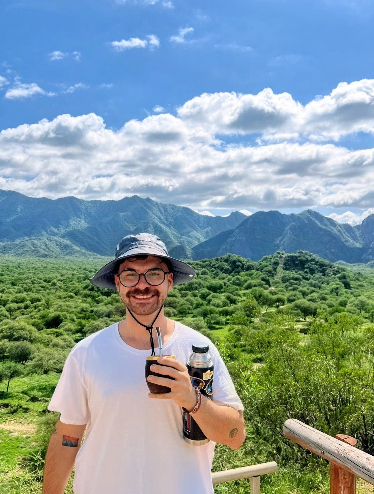

A 261.9 ± 9.4 day modulation in A0620–00.
Long-term ZTF, LCO and ATLAS monitoring reveals superorbital variability while the black-hole transient is in quiescence. The modulation may trace precession of the inner hot accretion flow.
Read the paper
I study how matter accretes onto compact objects.
PhD candidate at the Instituto de Astrofísica de Canarias, Tenerife, working on low-luminosity accretion in low-mass X-ray binaries with infrared, optical and X-ray observations.
I combine infrared, optical and X-ray observations to study low-mass X-ray binaries in quiescence and at low accretion rates. I also work on high-mass X-ray binaries and ultraluminous X-ray sources.
Long-term ZTF, LCO and ATLAS monitoring reveals superorbital variability while the black-hole transient is in quiescence. The modulation may trace precession of the inner hot accretion flow.
Read the paperThe low-mass companion fills its Roche lobe and transfers gas through the inner Lagrange point, L1. The mass ratio and orbital separation set the stream’s initial velocity and specific angular momentum.
After crossing L1, the gas follows an approximately ballistic trajectory in the corotating frame. Gravity and Coriolis forces curve the stream toward the outer disc, where its specific angular momentum is redistributed.
The velocity mismatch between the stream and the outer disc produces shocks, local heating and an azimuthally extended rim bulge. Some gas may overflow the rim and re-impact the disc at smaller radii.
The outer disc is nearly Keplerian, optically thick and geometrically thin, with H/R ≪ 1. Turbulent stresses transport angular momentum outward and mass inward, producing a multitemperature thermal spectrum.
In hard and quiescent states, the inner flow can be hot, optically thin and geometrically thick, with H/R ≈ 0.1–0.5. Thermal Comptonization produces the hard X-ray continuum.
The event horizon forms the inner causal boundary of the accretion flow. The ISCO radius depends on black-hole spin and orbital orientation, setting the binding energy available in the innermost stable orbits.
Hard-state LMXBs commonly launch jets. Stratified, partially self-absorbed synchrotron emission produces a flat or inverted radio-to-infrared spectrum, while the jet is strongly suppressed in disc-dominated soft states.
First-author and collaborative work on accreting compact objects, X-ray binaries, ultraluminous sources and massive-star binaries.
15 papers, 7 as first author
Observing programmes on space- and ground-based facilities, with the time allocated and my role in each proposal.
About 656 hours and more than 33 nights of allocated time across 21 programmes, 13 of them as PI.
| Facility | Programme or target | Allocated time | Role |
|---|---|---|---|
| NuSTARX-ray | NGC 628 ULX1, Cycle 11 | 110 ks+ 60 ks XMM-Newton | PI |
| IRAS 18293-0941, Cycle 11 | 180 ks | Co-PI | |
| IGR J17252-3616, Cycle 12 | 260 ks | Co-PI | |
| Las Cumbres ObservatoryOptical | ToO 2026B | 50 h | PI |
| ToO 2026A | 90 h | PI | |
| ToO 2025B | 40 h | PI | |
| ToO 2025A | 66 h | PI | |
| ToO 2024B | 50 h | PI | |
| GTCOptical | SS433, HiPERCAMSimultaneous with NuSTAR, Einstein Probe, LT and Calar Alto | 9.75 h48.75 h across 5 facilities | PI |
| V1405 Cas, HiPERCAM | 8.35 h | PI | |
| 4U 1822-00, HiPERCAM | 7 h | Co-PI | |
| ToO, OSIRIS | 10 h per semester, 2024–2026 | Co-PI | |
| Liverpool TelescopeOptical | ToO 2026A/B | 20 h | PI |
| ToO 2025A/B | 20 h | PI | |
| ToO 2024A/B | 20 h | PI | |
| ESOOptical / NIR | NTT, ULTRACAM | 3 nights | PI |
| VLT, ToO X-SHOOTER | — | Co-PI | |
| GeminiOptical / NIR | FLAMINGOS-2 | — | dPI |
| GHOST | — | dPI | |
| OtherOptical | CASLEO | > 30 nights | PI |
| NOT, SOFIN | 6 h | Co-PI |
PI: principal investigator. Co-PI: co-principal investigator. ToO: target of opportunity. Hours include every listed exposure; kiloseconds are converted to hours and nights are counted separately.
I am a PhD candidate at the Instituto de Astrofísica de Canarias and the Universidad de La Laguna, supervised by Montserrat Armas Padilla and Teo Muñoz-Darias.
I studied Astronomy at the Universidad Nacional de La Plata, Argentina, where I also worked as a teaching assistant before moving to Tenerife.
Instituto de Astrofísica de Canarias and Universidad de La Laguna, Spain
Universidad Nacional de La Plata, Argentina
Universidad Nacional de La Plata, Argentina. X-ray binaries and compact objects
Teaching assistant, 2022–2023Universidad Nacional de La Plata
Instituto de Astrofísica de Canarias
La Laguna, Tenerife, Spain